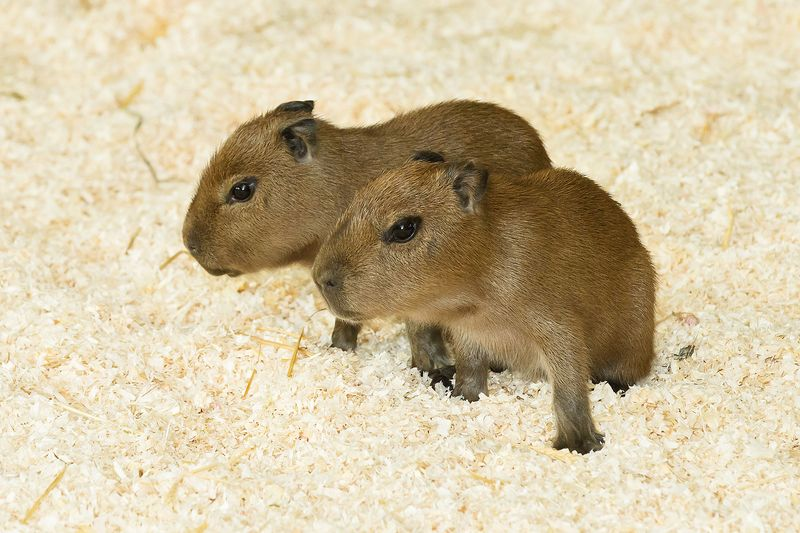
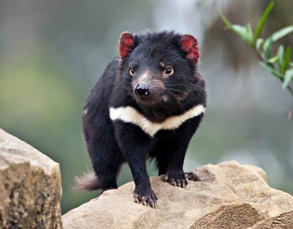

It is easily recognized by the large, distinctive black patches around its eyes, over the ears, and across its round body. The name "giant panda" is sometimes used to distinguish it from the unrelated red panda.

The capybara (Hydrochoerus hydrochaeris) is a large rodent of the genus Hydrochoerus of which the only other extant member is the lesser capybara (Hydrochoerus isthmius). The capybara is the largest rodent in the world.
In recent years, the diversity of fossil hydrochoerines has been substantially reduced. This is largely due to the recognition that capybara molar teeth show strong variation in shape over the life of an individual.
It is easily recognized by the large, distinctive black patches around its eyes, over the ears, and across its round body. The name "giant panda" is sometimes used to distinguish it from the unrelated red panda.
Unlike most other dasyurids, the devil thermoregulates effectively and is active during the middle of the day without overheating. Despite its rotund appearance, the devil is capable of surprising speed and endurance, and can climb trees and swim across rivers.
